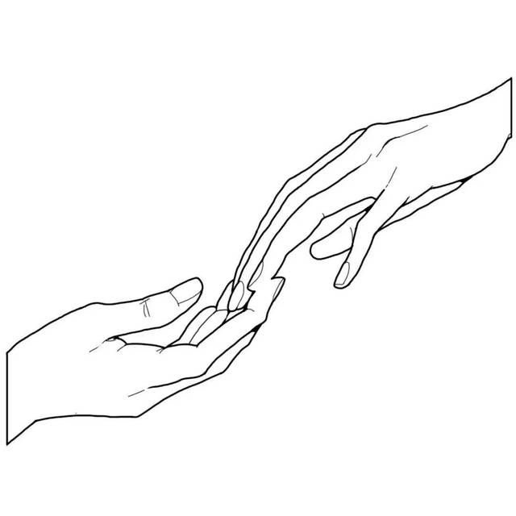

FOREVER
DDB
能较熟练使用JavaSript进行网页页面构建，曾有过Layui和MDUI实践经历。
face
前端新手，后端菜鸟
business
学了一点JQuery
曾个人完成了一个简单的轻量级学校资源网站搭建和维护，网站访问量高达0
expand_more下滑以查看更多
求精
精益
对web功能体验精雕细啄，曾因为一个没有报错的拼写错误找了近两小时bug所在
•本简历页面由原生JS配合MDUI写成，主要效果为自主写成
•本来打算写个后台界面，但是太懒了就没动手
expand_more下滑以查看更多
携手
并行
本人期望能够精进web能力，充分熟练运用前后端操作和逻辑交互技术，最终希望能够成为一名全栈工程师。
